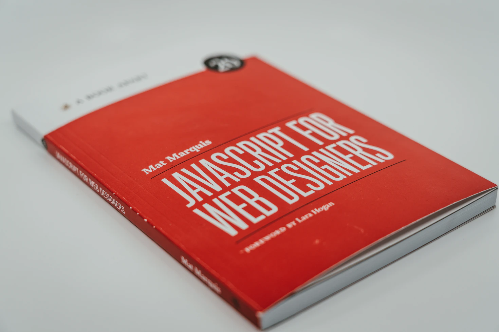

JavaScript 는 웹 페이지에서 사용자로부터 특정 이벤트나 입력 값을 받아 동적인 처리를 목적으로 고안된 객체 기반의 스크립트 프로그래밍 언어.
사용자 경험을 향상시키기 위한 방법으로 주로 사용된다. 일반적으로 HTML 문서에 내재되며, 브라우저에서 실행된다.
자바스크립트는 1995년 미국의 넷스케이프 커뮤니케이션즈 (Netscape Communications)에서 처음 개발되었다. 자바스크립트 표준은 1996년 11월부터 유럽 컴퓨터 제조업자 협회(ECMA: European Computer Manufacturers Association) 기술위원회 39(TC-39)에서 에크마스크립트(ECMAScript, ECMA-262)라는 이름으로 개발되었다. 최신 표준은 2017년 6월에 제정된 ECMAScript 2017이며, 2015년부터 1년에 한 번씩 새로운 버전의 ECMAScript를 공개하고 있다. 자바스크립트는 주로 웹 브라우저 내에서 사용되는 언어였으나, 자바스크립트 기반의 런타임 플랫폼(예: Node.js)들이 개발되면서 서버측 프로그램 개발에도 사용이 크게 확대되었다.
다음은 자바스크립트가 내재된 HTML 문서의 예로, 브라우저에서 ‘자바스크립트 실행’ 버튼을 클릭하면 < script > 태그 내에서 정의된 함수가 호출되어 실행된다.